Research
Working Papers
Is there a Prime Ministerial Party Advantage in Portfolio Allocation? How the Cases You Choose Affect the Answers You Get
Working Paper, 2025
Conflict Risk between the Russian Federation and any EU State: An Expert Survey
Working Paper, 2025
Publications
2026
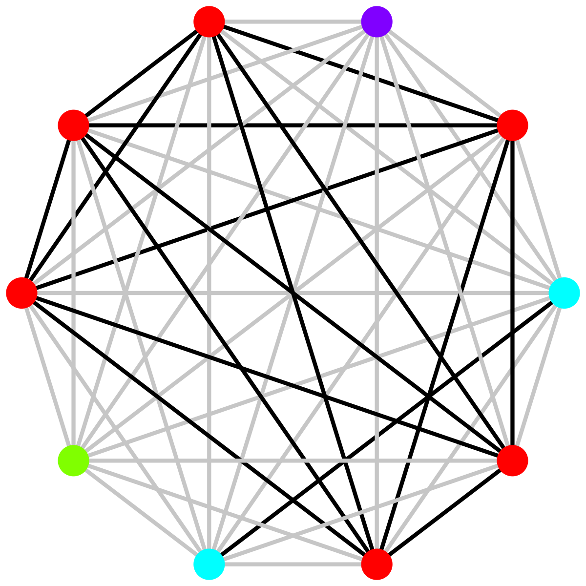
Coethnics Covote in Africa: Studying Electoral Cleavages with a Co-Voting Regression Model
American Political Science Review, 2026
2025
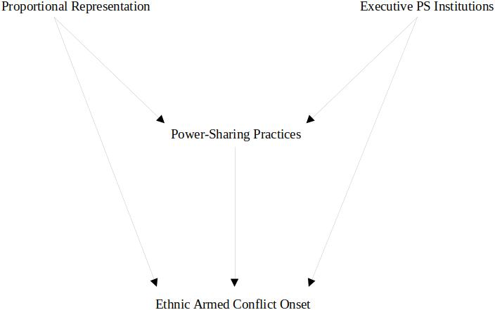
Probing PR: Does Proportional Representation Induce Ethnic Power Sharing and Reduce Conflict?
Research & Politics, 12(4), 2025, pp. 1–7
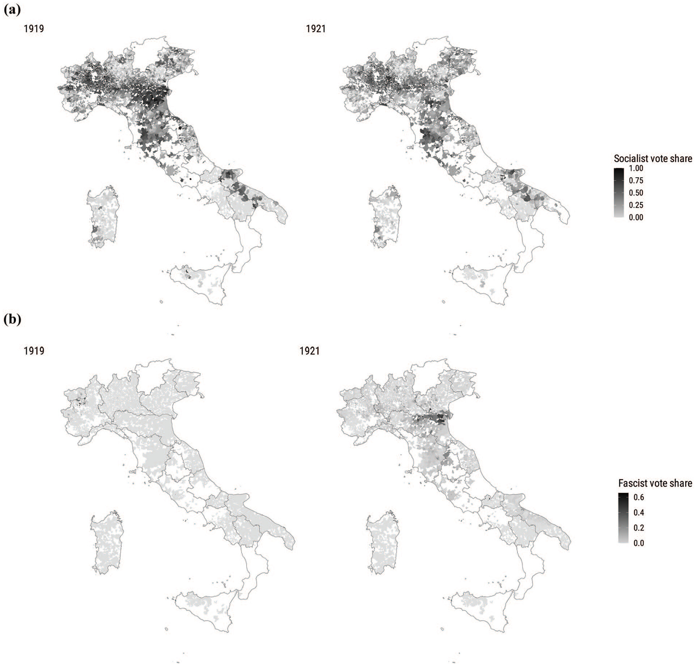
Political Violence and Anti-System Voting in Interwar Italy
Journal of Peace Research, 62(5), 2025, pp. 1581–1596
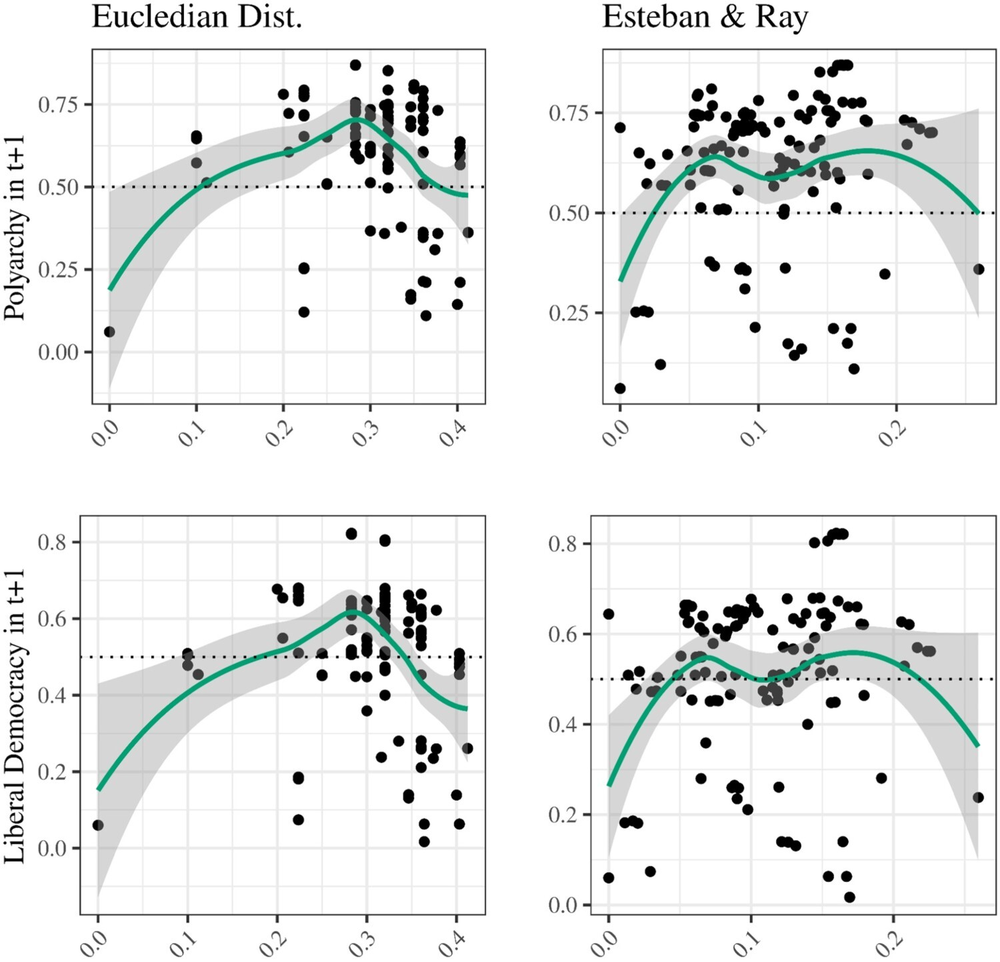
Polarization, Fragmentation, and Democratic Deconsolidation in Interwar Europe
Democratization, Online First, 2025, pp. 1–24
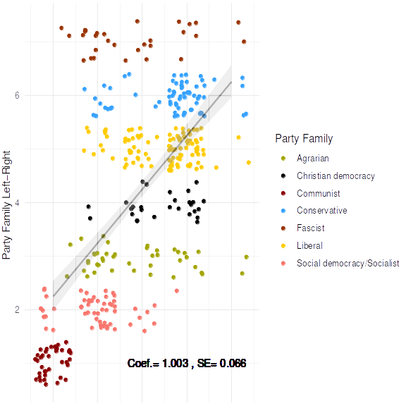
2024
2022
2021
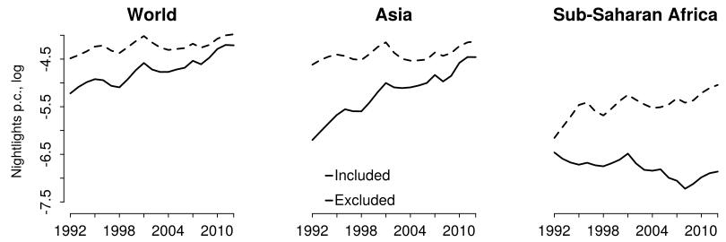
Globalization, Institutions, and Ethnic Inequality
International Organization, 2021
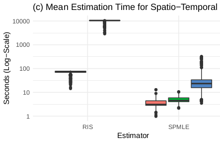
A Fast Estimator for Binary Choice Models with Spatial, Temporal, and Spatio-Temporal Interdependence
Political Analysis, 29(4), 2021, pp. 570–576
2019
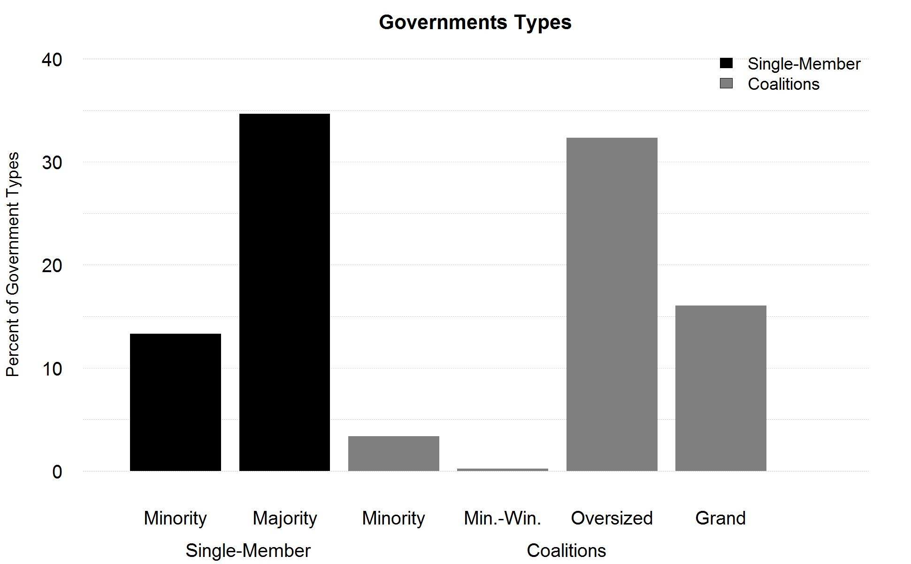
Uncertainty, Cleavages, and Ethnic Coalitions
Journal of Politics, 81(2), 2019, pp. 471–486
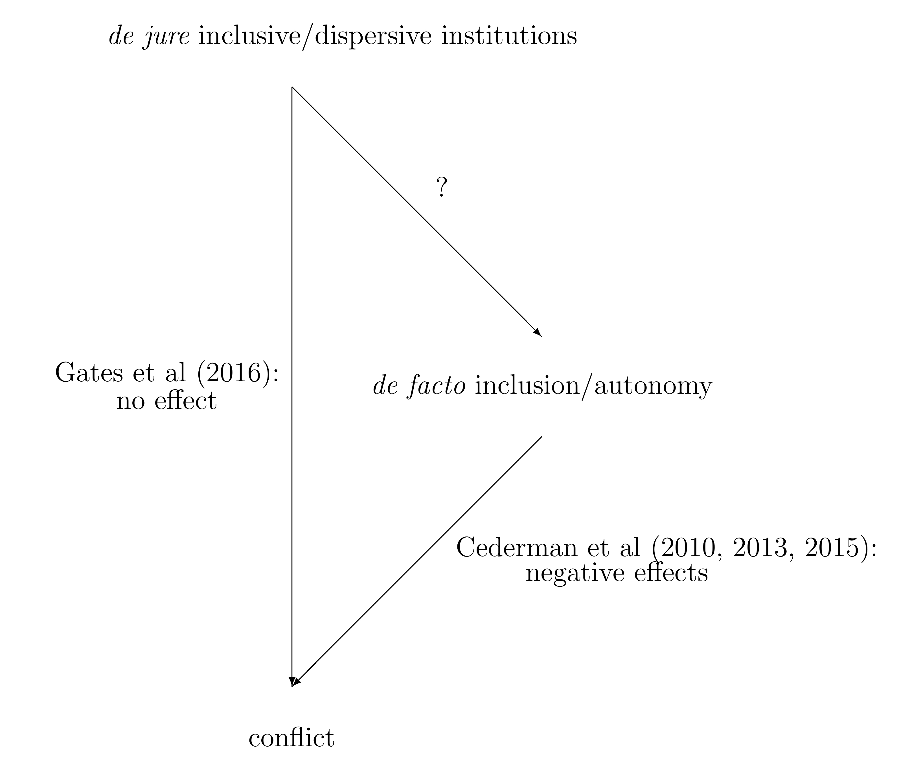
Power Sharing: Institutions, Behavior, and Peace
American Journal of Political Science, 63(1), 2019, pp. 84–100
2018
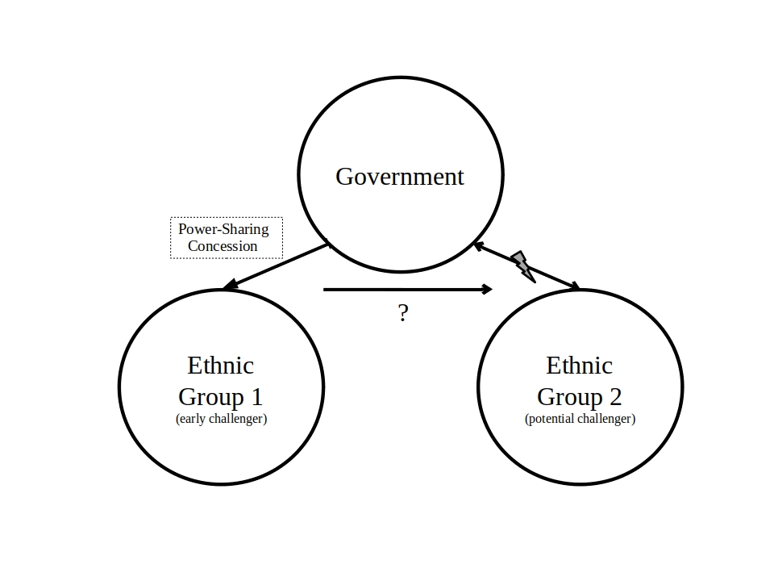
Reputation, Concessions, and Territorial Civil War
Journal of Peace Research, 55(5), 2018, pp. 671–686
2017
2016
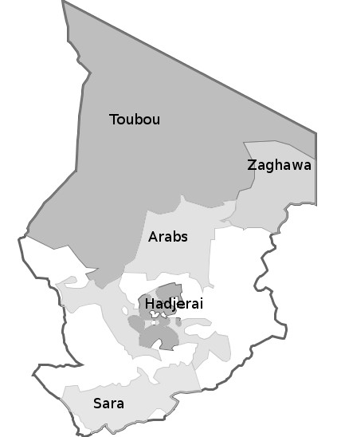
A Slippery Slope: The Domestic Diffusion of Ethnic Civil War
International Studies Quarterly, 60(4), 2016, pp. 587–598
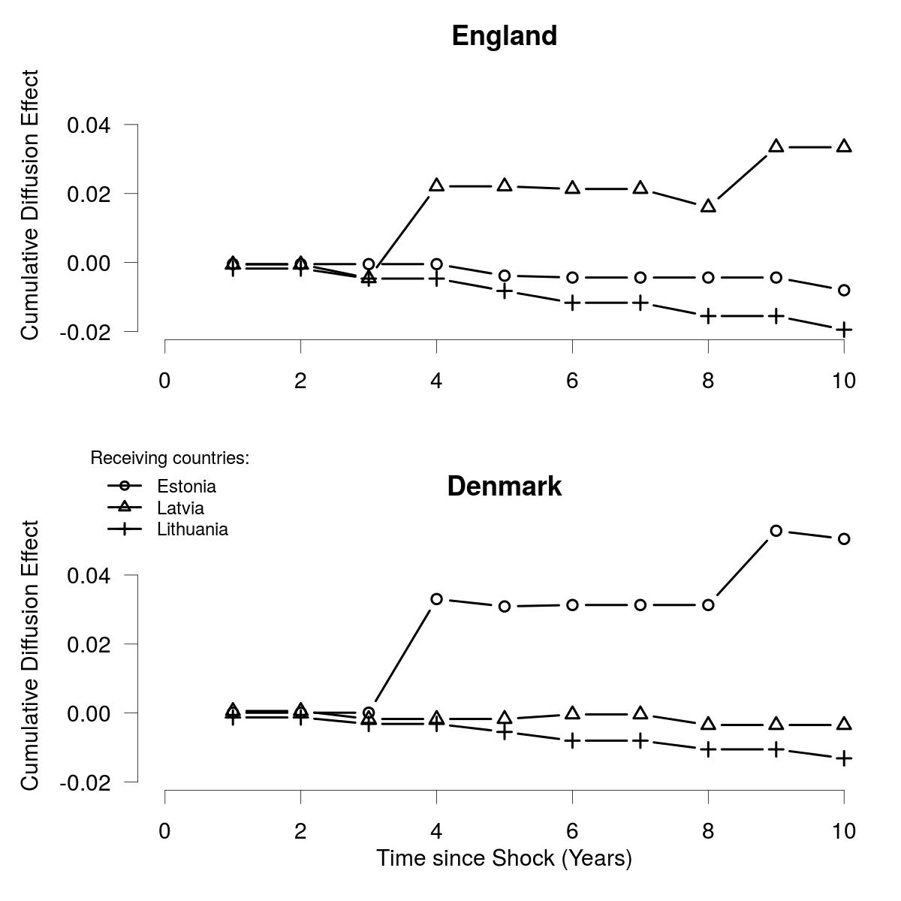
The Contingent Diffusion of Parliamentary Oversight Institutions in the European Union
European Journal of Political Research, 55(3), 2016, pp. 589–608
2015
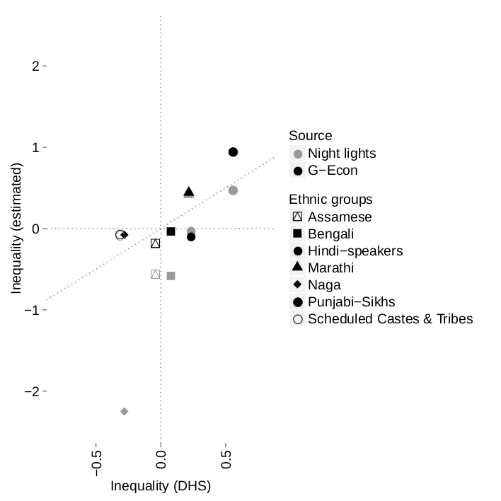
Projects
Democracy, Anger & Elite Responses (DANGER)

Do Nightlights Emissions Enlighten?

Power-sharing and Democracy: Beneficial and Perverse Effects